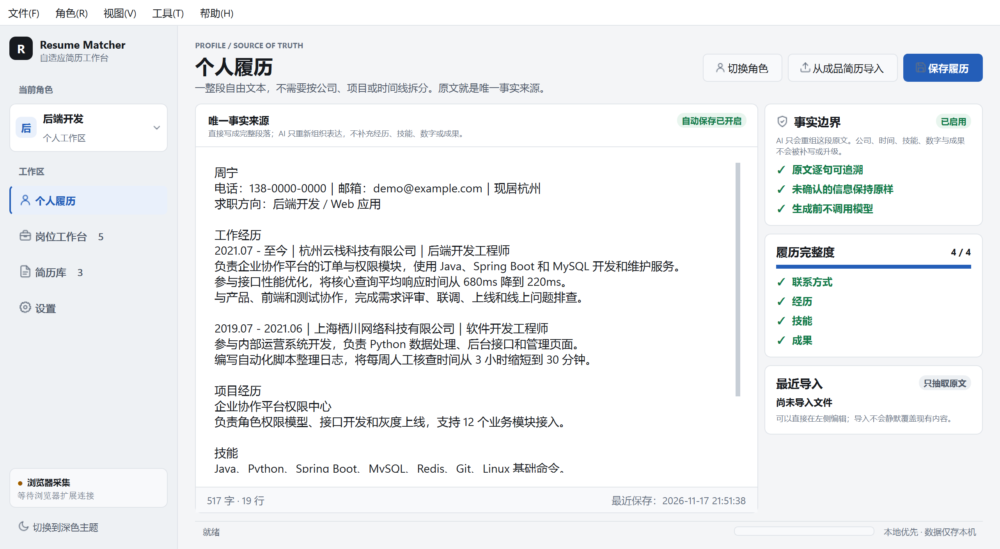
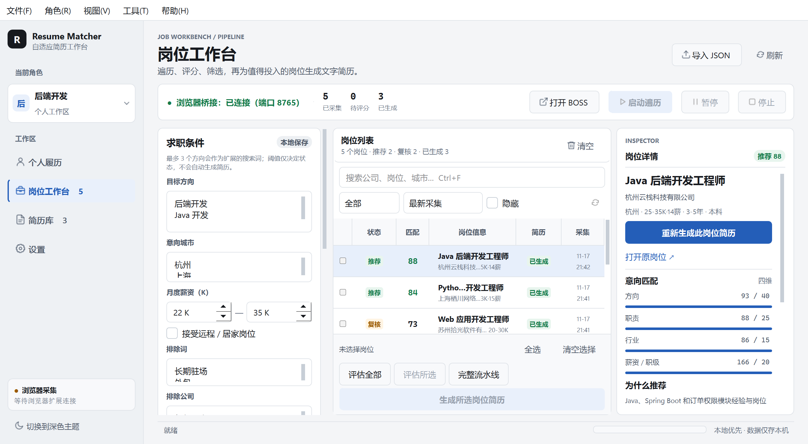
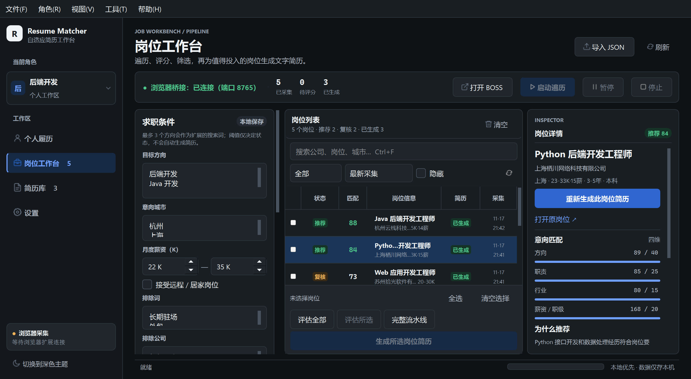
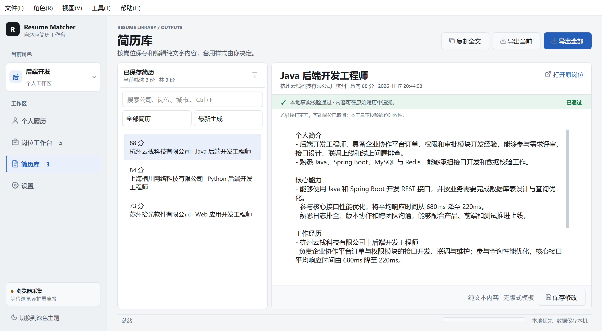
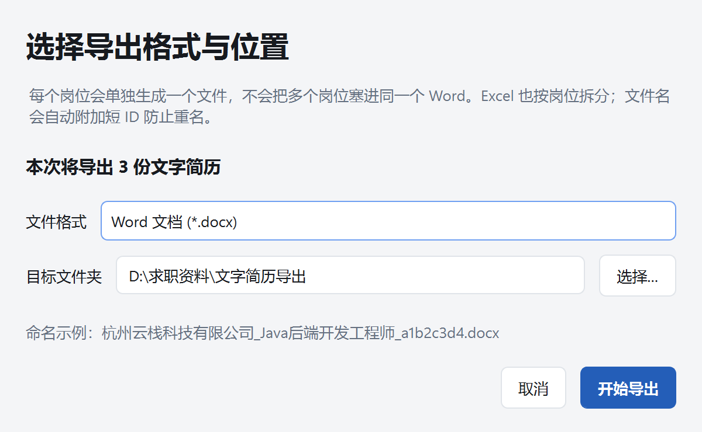

01事实来源
个人履历采用自由文本，不强制拆分。
履历可以按公司、项目或时间线组织，也可以写成完整的一段文字，不要求套用固定字段。已有成品简历可以直接导入，软件提取其中的履历内容后，原文仍可继续编辑；导入不会静默覆盖现有履历。不同求职方向可建立独立角色工作区，切换角色时，履历、岗位和已生成简历一并切换。
原始履历是后续生成的事实来源。软件不会补写没有发生的项目、技能、数字或成果。

02岗位工作台
先按条件收集岗位，再由用户决定生成范围。
在岗位工作台设置目标方向、城市、薪资范围、排除词和排除公司后，可连接已登录的 BOSS 直聘页面连续收集岗位。系统按方向、职责、行业、薪资和职级等维度计算匹配分，并显示评分理由与岗位详情。岗位列表记录公司、岗位名、城市、薪资、经验、学历、匹配分、生成状态和采集时间。
岗位分为推荐、复核、淘汰三类，支持按分数、薪资、公司或采集时间排序。匹配分用于筛选，是否生成仍由用户勾选决定；软件不校验岗位是否仍然有效。

03深色界面
深色模式保留同一套信息结构。
深色模式下的岗位列表、筛选条件、状态色和详情面板与浅色版一致，适合连续浏览岗位时使用。切换主题不会影响岗位数据、筛选条件或生成结果。
深浅主题只改变显示，不改变评分、筛选和生成逻辑。

04岗位定向简历
按岗位生成简历，保留事实依据。
用户可选择一个或多个岗位生成简历。软件对照履历原文和岗位要求，保留有依据的经历并重新组织表达。表达强度分为精准、标准、委婉：精准更贴近岗位措辞，标准保持中性，委婉使用更自然的近义表达。每份结果与对应岗位绑定，可随时编辑、复制或重新生成。
没有证据的技能、数字或成果不会被补写；输出不含固定模板，可自行套用简历样式。

05导出
每个岗位单独导出一个文件。
简历库按岗位保存生成结果，可随时查看、编辑、复制或重新生成。导出支持 Word、Markdown 和 Excel，并可指定保存目录；每个岗位单独生成一个文件，文件名包含公司和岗位信息。
清空岗位列表只影响当前显示，不删除已保存的岗位与简历资料。
